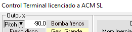
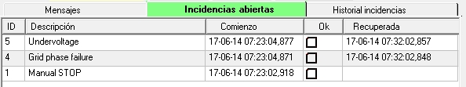
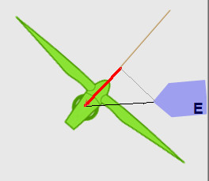

Obiettivo:Identificare le condizioni di velocità del vento che permettono alla generazione di iniziare.
Cosa osservare:Velocità del vento, stato del sistema e transizione dalla chiusura al funzionamento.
Cosa notare:Velocità del vento approssimata al momento dell'avvio e successiva evoluzione.
💡 Osservare se c'è isteresi tra shutdown e start-up.
L'obiettivo di questa pratica è quello di familiarizzare lo studente
•con i diversi sinottici disponibili.
• con la creazione delle condizioni necessarie per la turbina eolica per iniziare la produzione.
1. Assicurarsi che la simulazione sia in esecuzione: nel "Simulatore in esecuzione..." sinottico, stampa "Corri!."
2. Si noti che l'angolo di lancio cambia a -90o. Potete controllare questo nel sinottico Power Train.

Anche nel sinottico "WindNacelle":
E nel sinottico "Control Terminal":

3. Controllare nel "Manuale Elettrico..." sinottico che il "Interruttore principale" è collegato. Vedi la seguente figura:


Fig. Dettaglio della "Interruttore principale."
4. Nella schermata "Control Terminal", verificare che non ci siano incidenti che devono essere riconosciuti nel "Interventi aperti" scheda (eccetto per "STOP manuale").
Ad esempio, se si dispone di 'run' la simulazione e il "Main Switch" non è stato collegato, il Controller rileva la mancanza di alimentazione principale e segnala incidenti come quelli mostrati nella figura seguente, notando la data in cui sono stati rilevati (ora di giorno di anno: minuto: secondo, secondo):
Se si passa al "Main Switch" a "On", il Controller rileva che le condizioni che hanno causato gli incidenti sono scomparse e noterà il momento in cui ciò si verifica nella colonna intitolata "Recuperato. Vedi la figura seguente.


5. In questa situazione, l'elenco dei "Incidenti aperti" dovrebbe mostrare solo "STOP manuale", come nella figura seguente:
Il Controller è in grado di ricevere il comando "START".In questo particolare tipo di Controller, il comando (manuale) del Terminale di controllo deve essere preceduto dall'approvazione dell'operatore, per la quale deve essere controllata la casella corrispondente alla linea "Manual STOP". Vedi la figura seguente.
Si noti che il riconoscimento di questo incidente non si riflette nella 'Storia dell'incidente'.
Da questo momento in poi, il Controller è disponibile per ricevere il comando "manuale" "START".
Se si preme il pulsante "START", le prestazioni della turbina eolica dipendono dalla velocità del vento. Prima di premerlo:
6. Assicurati di avere un "Recorder" visibile dove viene visualizzato il "Pannello predefinito" con il nome "Cutin + Cutout + Production", come mostrato nella figura seguente. VediCome visualizzare un Registratore e scegliere un Pannello predefinito in esso.
7. Cambiare la velocità del vento a 6,0 m/s. Questo è un basso valore eolico: la turbina eolica simulata genera una potenza nominale di 1.300 KW ad una velocità nominale del vento di circa 12 m/s. Una velocità del vento di 6 m/s è sotto la velocità del vento "Max. for Large Generator" (vedi Valori eolici funzionali), quindi sappiamo che il collegamento a 6 poli del generatore (Small Generator) sarà utilizzato.
Per fare questo, individuare il sinottico "SynopticWindNacelle" (vedereCome portare un sinottico specifico in primo piano).
In questo sinottico, posizionare il mouse sopra l'indicatore del vento (fondo bianco). Vedi la figura seguente.
Puoi cambiare il vento in due modi:
1. digitando il valore desiderato direttamente.
Si noti che quando si cambia il valore, lo sfondo diventa giallo fino a quando si preme il tasto "Enter" sulla tastiera. Se si desidera interrompere il cambiamento, prima di premere "Enter", è possibile premere il tasto "ESC" (in alto a sinistra della tastiera).
2. Usare il "Pagina," "Pagina iniziale," "Arrow#Condividi su Facebook" chiavi.
Questo metodo è preferito e consente di modificare il valore in incrementi di 1 m/s (Page Up/Page Down) o in incrementi di 0,1 m/s (Arrows).
Questo è il metodo preferito perché limita il cambiamento della velocità del vento a valori ragionevoli, mentre nel metodo 1, questi cambiamenti possono essere molto brutti.
8.È possibile approfittare di questo per cambiare la direzione del vento, utilizzando la stessa procedura sul "Direzione del vento"indicatore.
9.Premere il tasto "START" e osservare l'evoluzione dei seguenti segnali sul registratore e sui diversi sinottici.
1.Velocità di rotazione della lama:in SynopticDriveTrain, Control Terminal e Recorder.
2. Velocità di rotazione albero generatore: in Control Terminal e Recorder.
3. Nacelle orientamento: in SynopticWindNacelle e Recorder.
4. Pressione del circuito idraulico, pompaoperazione, erilascio freno: in SynopticDriveTrain e Recorder
5. Piazzolaangolo: in SynopticDriveTrain (entrambi in 'Vista Interna' e 'Vista 3D'), in Control Terminal, in SynopticWindNacelle, e nel Logger.
6. Velocità del vento: in SynopticWindNacelle, in Control Terminal e Recorder.
7. Contatto di bypass di Thyristorstato (connessione alla griglia): in Armadio elettrico (vista interna), in Terminale di controllo e Logger.
10.Si otterrà un'evoluzione del segnale nel registratore simile a quello mostrato nella figura seguente:
11.Si può vedere che, dopo una certa quantità di tempo (a pochi secondi) dopo aver premuto START, il Controller attiva i motori di orientamento ("Girare" e "Girare a destra") fino all'orientamento della Nacelle 'apprezzabilmente' corrisponde alla direzione del vento indicata, ma non esattamente. Questo perché il controllore assume che ci sia un certo grado di incertezza nella misura della direzione del vento e che, d'altra parte, spostando l'energia della nacelle 'richiede' e quindi ha un costo. Il risultato è che se l'errore tra la direzione del vento 'misurato' e l'orientamento della nacelle è all'interno di un certo margine, 'decide' che è orientato.
Il valore di questo margine nel simulatore è esagerato per scopi educativi.
Allo stesso modo, la velocità di rotazione della nacelle nel simulatore non è realistica, anche se questo è un valore che può essere modificato, anche durante l'esecuzione della simulazione, utilizzando i parametriNacelleYawing.CWYawingSpeedeNacelleYawing.CCWYawingSpeed. Il valore predefinito è di 10 gradi/secondo, mentre in realtà questo valore è di circa 0,5 gradi/secondo.
12.Il concetto di "Velocità del vento efficace."
Questo valore corrisponde al valore di ilvento anteriore al piano di rotazione delle lame, cioè, il vento che serve efficacemente a ruotare le lame.
Se la turbina eolica non è orientata, questo valore corrisponde al prodotto della velocità del vento reale moltiplicato per il cosne dell'angolo di disallineamento. Essa corrisponde al vettore rosso nella figura seguente.

13. Analisi funzionale della sequenza degli eventi durante l'operazione di connessione della griglia(cutin):
1. Se la nacelle non è orientata verso il vento, inizia l'operazione di orientamento. Può essere necessario prima eseguire un'operazione di disavvolgimento del cavo di alimentazione.
2.Sulla base della misurazione del vento, il controllerdecideche il generatore, che ha due possibili connessioni (corrispondente a avvolgimento dello statore con 4 o 6 pali magnetici, "Grande Gen." e "Piccolo Gen."), sarà collegato con 6 poli ("Small Gen."). In questo caso, ilvelocità sincronae' di 1.000 giri.
3. Prima di iniziare l'operazione effettiva, il controller decide di controllare la condizione del meccanismo frenante (condizione della scarpa freno, molla, ecc.). Per fare questo, attiva il freno, impostando il passo delle lame ad un valore in cui sa che il vento produce una coppia meccanica sufficiente sulle lame per questo controllo.
4. Se tutto è OK, procede a rilasciare i freni: per farlo, chiude la valvola di circuito idraulico e inizia la pompa.
5. Il treno di potenza inizia ad accelerare.
6. Il controller monitora il valore di accelerazione del treno di potenza e agisce sul campo (che è la fonte di accelerazione) in modo che questo valore rimanga al di sotto di un certo livello.
7. Quando la velocità del generatore si avvicina alla velocità sincrona, il controller attiva i tiristori. L'angolo di conduzione del tiristor segue un modello di partenza con un piccolo angolo di conduzione e raggiungendo la piena conduzione dopo pochi secondi (tipicamente da 2 a 4 secondi).
Vedere l'animazione inAvviamento morbido (collegamento morbido) alla griglia.
8. Quando i tiristori stanno conducendo completamente, il controllore attiva i contattori di bypass del tiristoro, che li cortocircuitano: in questa situazione, nessuna corrente scorre attraverso i tiristori e sono disattivati. La turbina eolica è in produzione.